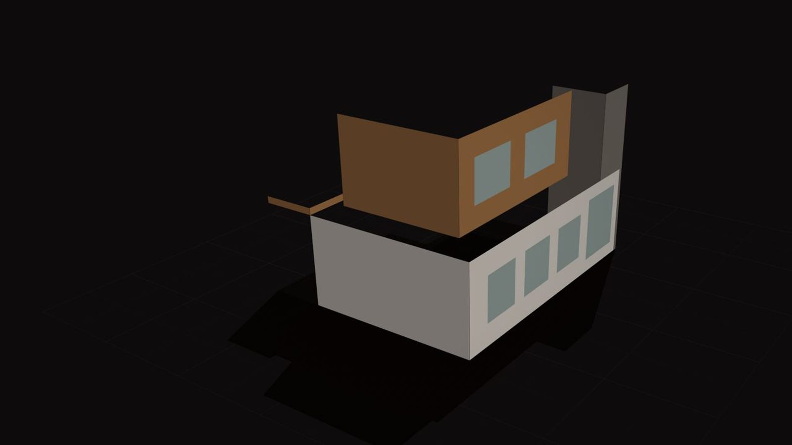
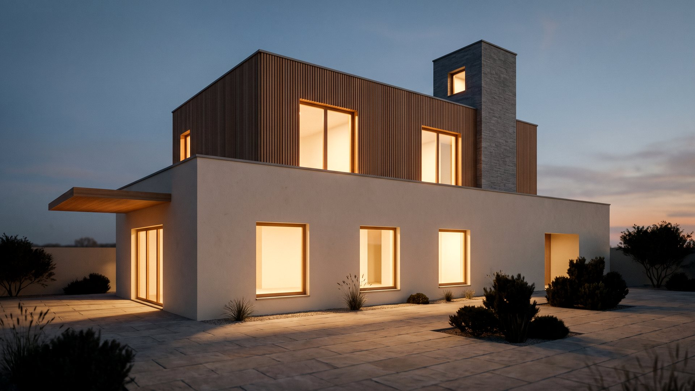

Projeyi temeli atılmadan sattırın. Konut projesi, villa, site ve ticari yapı için 3D render, tanıtım animasyonu, sanal tur ve maket videosu.
Kat planı ve teknik çizimden sinematik render seti ve animasyon. Dış cephe, iç mekân ve gece aynı modelden çıkar — baskı çözünürlüğünde.
Bir inşaat projesinin en pahalı dönemi, henüz satılmadığı dönemdir. Maket satışına ne kadar erken başlarsanız finansman o kadar rahatlar. Ama alıcı, göremediği bir daireye kolay kolay para bağlamaz. 3D modelleme tam olarak bu boşluğu kapatır: beton dökülmeden önce projeyi bitmiş, ışıklandırılmış, peyzajı yapılmış ve içinde gezilebilir halde gösterir.
Luna Yapım olarak mimari projeyi alıp gerçek malzeme dokularıyla modelliyor, arsanın gerçek konumuna ve gerçek güneş açısına oturtuyor, sonra da bunu satış ofisinde, ilan sitelerinde ve sosyal medyada kullanabileceğiniz video ve görsellere dönüştürüyoruz.
Yapının bitmiş halinin yüksek çözünürlüklü görselleri. Sabah, gün batımı ve gece olmak üzere farklı ışık senaryolarında; gerçek cephe malzemesi, doğrama ve peyzaj detaylarıyla. Bu görseller ilan sitelerinde ve satış broşüründe doğrudan kullanılır.
Havadan yaklaşan bir kamerayla başlayıp siteye giren, ortak alanlarda dolaşan ve örnek daireye kadar süzülen 60–120 saniyelik tanıtım filmi. Müzik, seslendirme ve proje bilgilerini içeren grafiklerle birlikte teslim ediyoruz. Ürün ve hizmet animasyonu tarafındaki aynı teknik altyapıyı kullanıyoruz.
1+1'den 4+1'e kadar her daire tipinin mobilyalı iç mekân görselleri. Alıcı, aldığı dairenin metrekaresini rakam olarak değil, içinde durduğu bir oda olarak görür. Satış ofisinde en çok işe yarayan çalışma budur.
Blokların, otoparkın, sosyal tesisin, yürüyüş yollarının ve peyzajın kuşbakışı 3D maketi. Hangi bloğun hangi manzaraya baktığı, hangi dairenin güneşi ne zaman aldığı bu maket üzerinde net görünür.
İnşaatın aşamalarını (kazı → temel → kaba yapı → cephe → teslim) hızlandırılmış bir animasyonla anlatan çalışma. Yatırımcıya ve alıcıya takvim güveni vermek için kullanılıyor.
Web sitenize gömülebilen 360° sanal tur. Alıcı kendi telefonundan daireyi gezer, oda oda dolaşır. Uzaktaki ve yurt dışındaki alıcı için satışı kapatan adım genelde budur.
Bizi çoğu görselleştirme ofisinden ayıran şey, kamerayı da kendimiz kullanıyor olmamız. Arsanın veya devam eden şantiyenin drone çekimini yapıyor, 3D modeli bu gerçek görüntünün içine yerleştiriyoruz. Sonuç: alıcı projeyi hayali bir boşlukta değil, gerçek sokakta, gerçek komşularıyla ve gerçek manzarasıyla görüyor. Aynı şekilde teslim edilmiş bloklarda gerçek çekim, henüz yapılmamış bloklarda 3D kullanarak tek bir bütün film çıkarabiliyoruz.
İnşaat halindeki bir projede en verimli yöntem şu: lansman öncesi tamamen 3D, kaba yapı bitince drone + 3D karışımı, teslimde ise tamamen gerçek çekim. Aynı proje için üç ayrı film yerine, tek bir kurgunun üç sürümü olarak planlıyoruz — maliyet de böyle bölünüyor.
Mimari projeyi, malzeme listesini ve satış hedefini alıyoruz. Hangi görselin nerede kullanılacağını baştan netleştiriyoruz.
Yapı, arsa, çevre ve peyzaj ölçülü olarak modelleniyor. Doğru kot, doğru yön, doğru güneş açısı.
Gerçek cephe kaplaması, doğrama, cam ve zemin malzemeleri uygulanıyor; ışık senaryoları kuruluyor.
Düşük çözünürlüklü taslak render ve kamera hareketi onayınıza sunuluyor. Revizyon burada yapılıyor.
Yüksek çözünürlüklü çıktı alınıyor; müzik, seslendirme ve grafiklerle kurgulanıyor.
Yatay, dikey ve kare video; web ve baskı çözünürlüğünde görseller; istenirse sanal tur bağlantısı.
Aşağıdaki paketler tipik ihtiyaçlara göre kurulmuştur; proje ölçeğine göre birleştirip bölebiliyoruz. Fiyat, blok sayısı ve daire tipi sayısına göre belirleniyor.
Aşağıdaki film bir modelin altı katmanını sırayla açar. Her katmanda hangi kararın sizde olduğu yazıyor; onaylamadığınız katmandan bir sonrakine geçilmez.
Solda beşinci katman (kütle, malzeme, ışık yönü belli; doku yok). Sağda aynı projenin final karesi. Müşteriye giden her final karede bu iki görüntü yan yana teslim edilir; hangi ayrıntının modelden, hangisinin render motorundan geldiği yazılıdır.


05 · Blok model06 · Final kareAvusturya'da bir konut projesi için ürettiğimiz tanıtım animasyonu. 8K çözünürlükte render alındı; havadan yörüngeyle başlayıp çatı terasına inen ve sokak seviyesinde biten tek akış.
Aynı modelden dış cephe, iç mekân ve gece görselleri de çıkıyor — animasyon ve baskı çözünürlüğünde durgun kareler tek üretimden geliyor.
Fareyi bir işin üzerinde tut, sessiz oynar; tıklayınca sesli açılır. Kategoriye göre süzebilirsin.
Evet, en sağlıklısı DWG veya PDF mimari projedir. Elimizde yalnızca kat planı ve cephe görüntüsü olsa da model kurabiliyoruz; ancak ölçülü proje verdiğinizde hem süre kısalır hem de görsel gerçek yapıya birebir oturur.
Tek blok bir konut projesinde modelleme ve render süreci genellikle 10–15 iş günü, çok bloklu site yerleşimlerinde 3–5 hafta sürer. Aciliyeti olan lansmanlarda önce statik render görsellerini teslim edip animasyonu arkadan yetiştiriyoruz.
3D görselleştirmenin en güçlü olduğu yer tam olarak burasıdır. Temel atılmadan önce projenin bitmiş halini, manzarasını, peyzajını ve iç mekânını gösterebilir; maket satışına lansman günü başlayabilirsiniz.
Evet. Arsanın veya devam eden şantiyenin havadan görüntüsünü çekip 3D modeli gerçek çevreye yerleştiriyoruz. Böylece alıcı projeyi gerçek konumunda, komşu yapılarla ve manzarayla birlikte görüyor.
Taslak aşamasında sınırsız yön değişikliği yapıyoruz; yüksek çözünürlüklü render alındıktan sonra iki tur revizyon fiyata dahildir. Bu yüzden onay adımını taslak aşamasında bitirmeye önem veriyoruz.
Evet. Videoyu yatay, dikey ve kare olmak üzere üç formatta; render görsellerini ise baskı ve web çözünürlüğünde teslim ediyoruz. Kullanım hakkı tamamen size aittir.
3D modelleme tarafı tamamen uzaktan yürüyor; projeyi gönderdiğiniz her ilde çalışabiliyoruz. Drone ve gerçek çekim gerekiyorsa Bursa ve çevre illerde kendi ekibimizle, diğer illerde çözüm ortaklarımızla gidiyoruz. İl sayfalarına bakın.
46 ilde ayrı sayfa — her biri o ilin pazarına, ilçelerine ve coğrafyasına göre yazıldı. Diğer iller için il sayfalarına bakın.
İletişim
Mimari projeni gönder, kaç günde ve neye mal olacağını aynı gün söyleyelim.